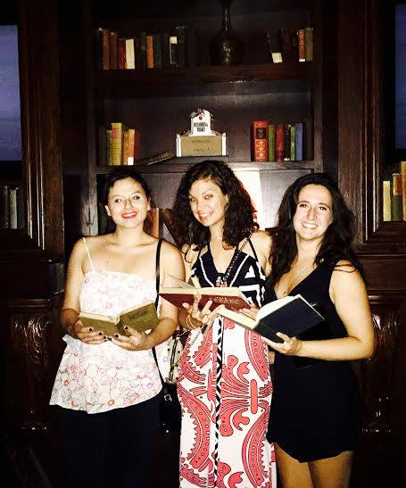
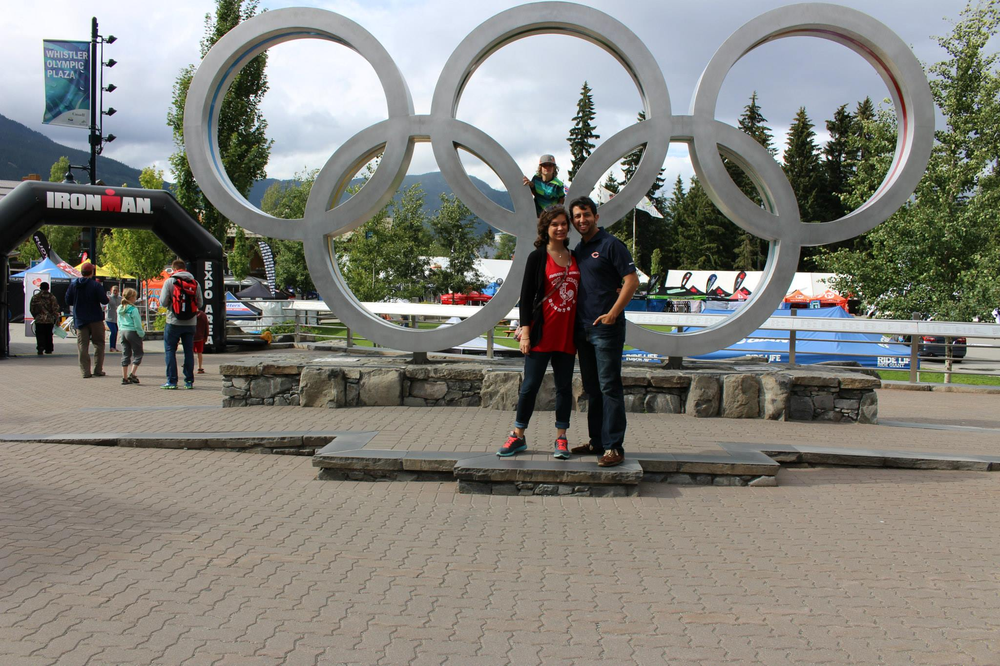
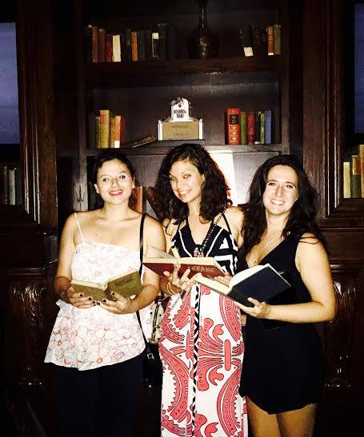
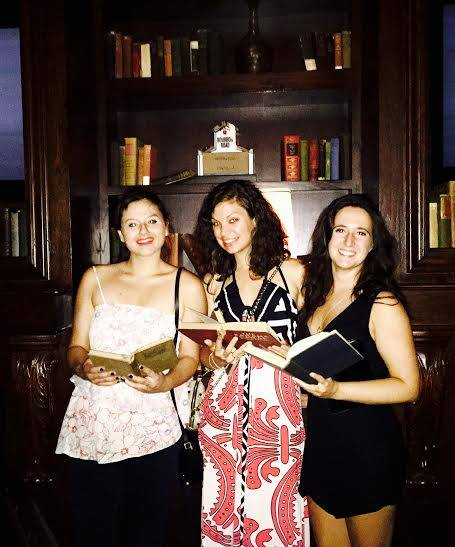

There is some text here. Blah blah blah blah blahhhhhhhhhhh. Making changes to test this out
Hello! This is me.
>> Summer 2015: Thesis completion
After working on my thesis for roughly two and a half years, I finally, officially completed it on July 31, 2015. Once finished, I was granted a Master in Arts in East Asian Studies. I threw a "thesis is over" party at Carnivale and Hubbard Inn.
Look there are three figures here!
>>Portland, Seattle, Vancouver Trip
Inspired by the television series Portlandia, my husband and I took a trip to Portland, Seattle and Vancouver in July. The scenery was beautiful!
Look there are three figures here!
>>One Year Anniversary
On August 30, my husband and I celebrated our one year anniversary of being married. We participated in a sprint triathlon and stayed at the Palmer House Hilton, the hotel our reception was held at, that day. Click here for guest taken images from our wedding.

 
